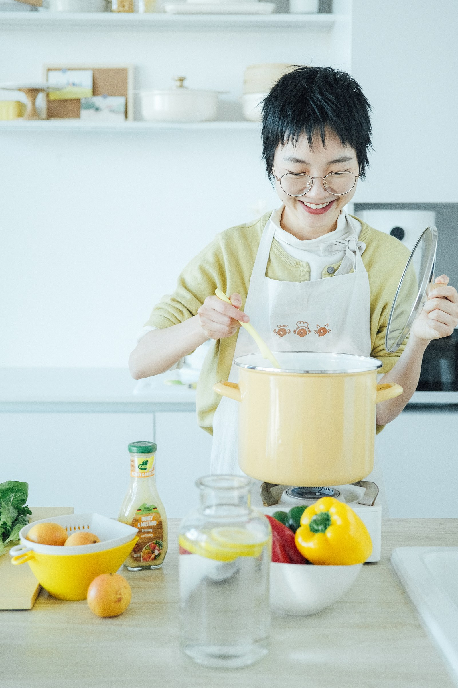
很多人说想"吃得健康"，但真正需要的，可能只是一个更简单、更不需要纠结的选择。
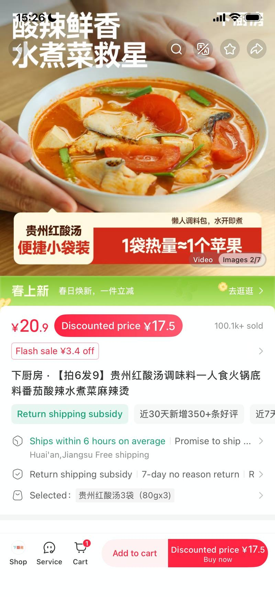
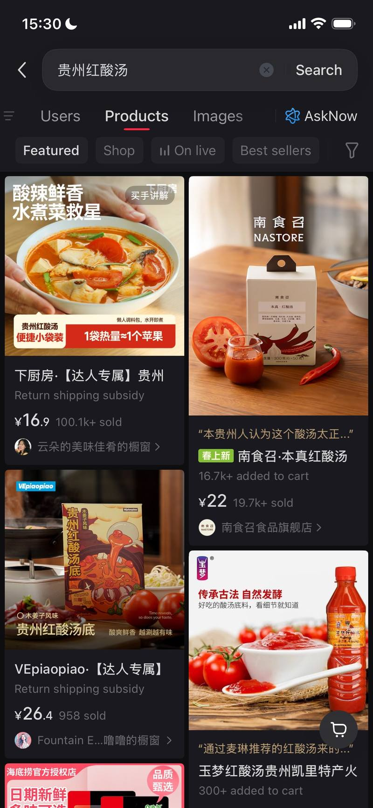
好的产品决策，不只是从数据"推导"出来的，而是从数据里"认出"一个具体的人。
打造"下厨房"自有品牌调味品矩阵，主导从视觉概念到包装落地的全流程，提升品牌在线上渠道的整体辨识度。
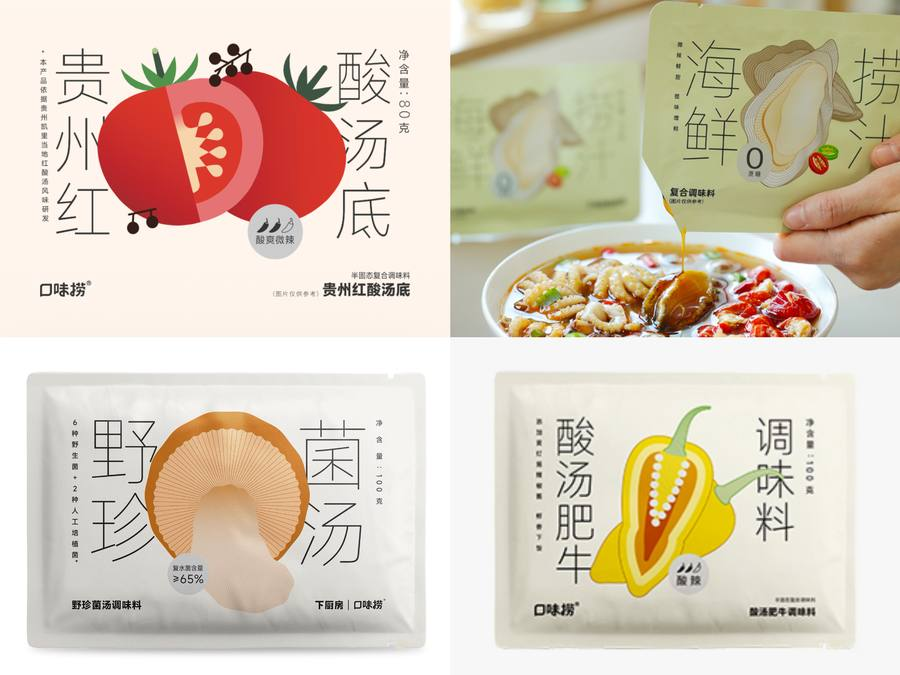
从单品包装到系列视觉体系，这套搭建逻辑适用于任何处于品牌初建期的消费品。
店铺缺流量，也缺转化，但更缺的是把两件事当成一个系统来设计。
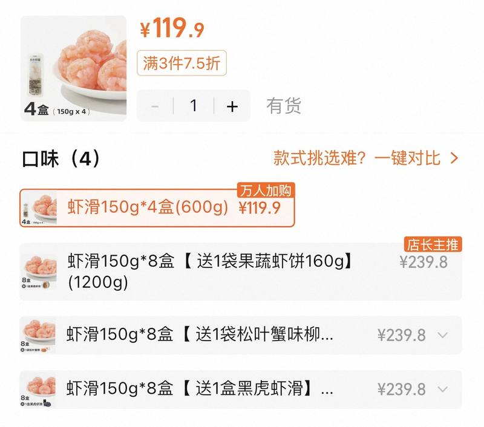
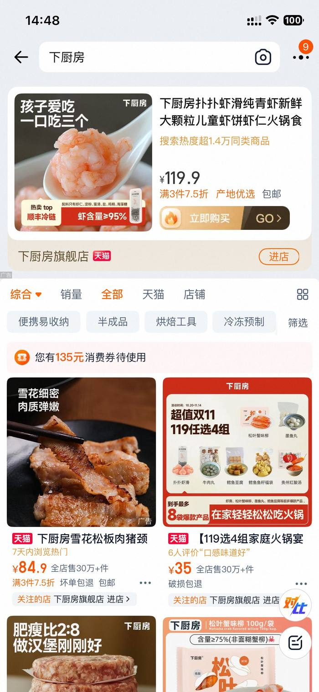
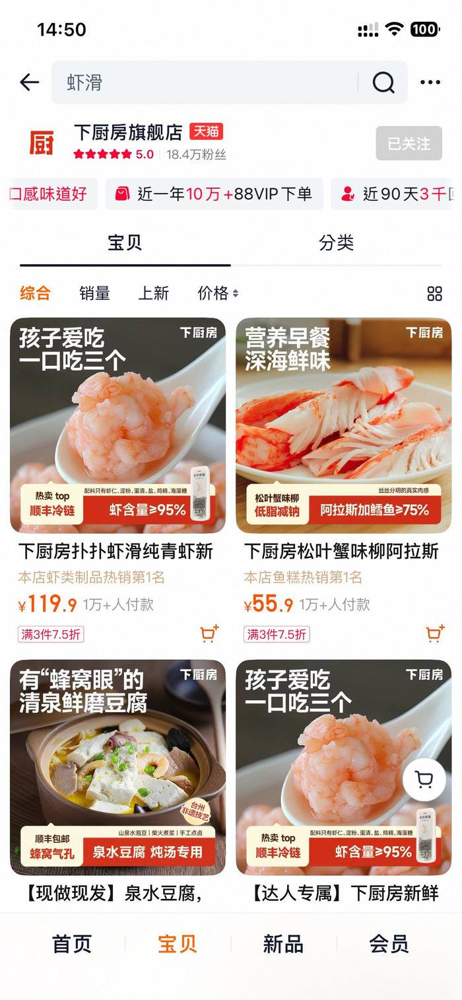
增长不是砸钱买流量，是让每一分钱都花出更高的客单价。
从 0 到 1 最重要的不是第一次做得多好，而是把过程变成可复用的东西沉淀下来。
选择丝瓜络切入——契合海外用户对"东方手工 + 可持续生活"的兴趣。内容以女性视角讲文化故事。
| 维度 | 数据 |
|---|---|
| 发布视频 | 15 |
| 累计点赞 | 615 |
| 单视频最高点赞 | 207 |
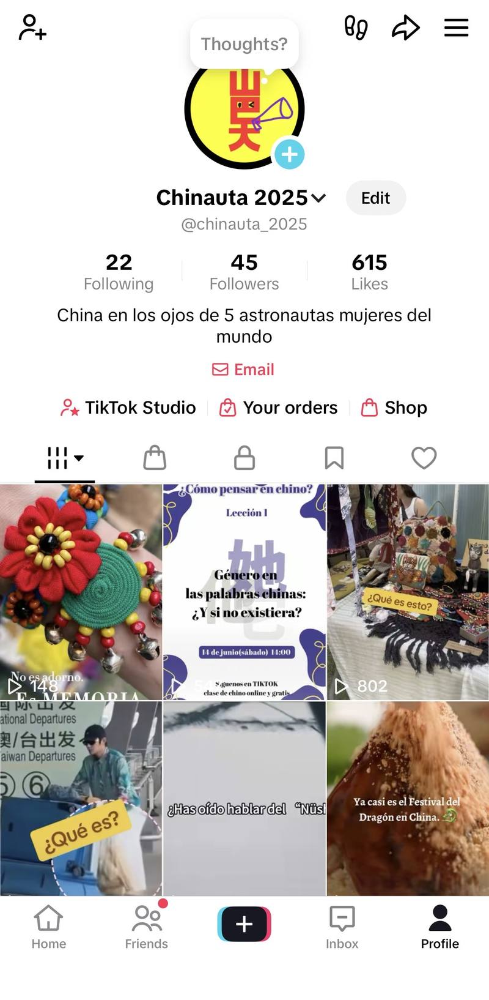
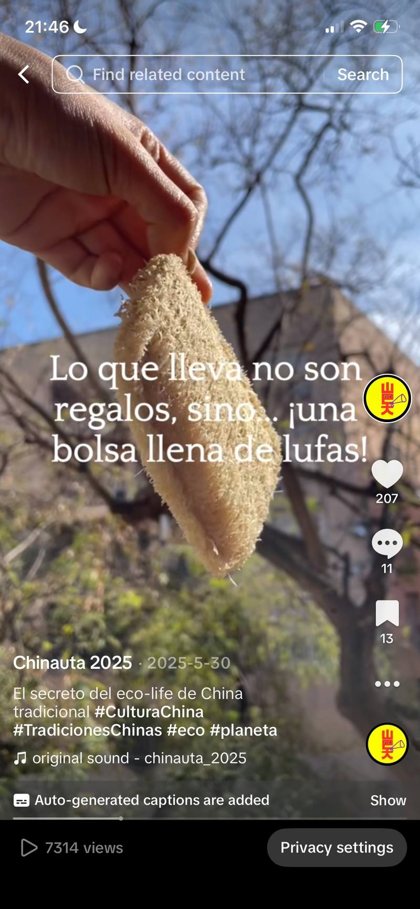
这次验证让我看到：在 TikTok 上做内容（讲故事、建立情感连接）是可以做到的，但从内容到转化的路径比想象的要长。
卖货文的本质不是"介绍产品"，而是"帮用户说服自己"。
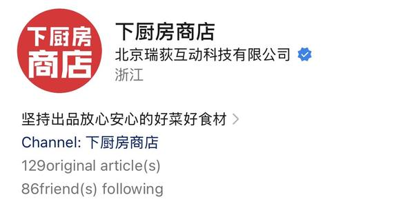
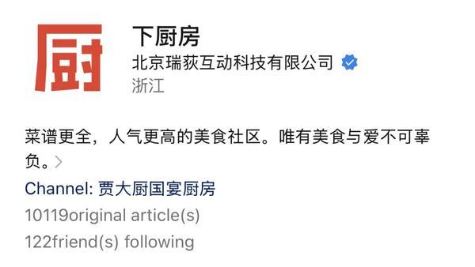
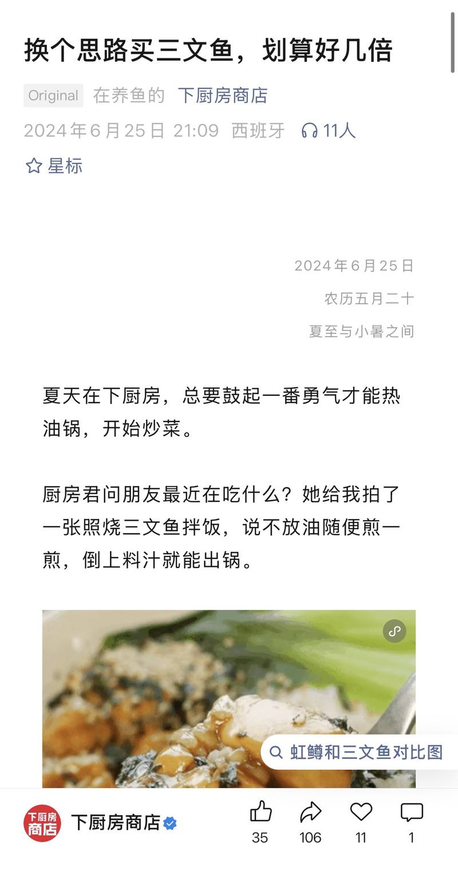
为什么选"懂事"？蓝莓不用洗不用剥，拿起来就吃。但只说"方便"是说明书。说"懂事"，是把产品特征翻译成用户的情感语言。
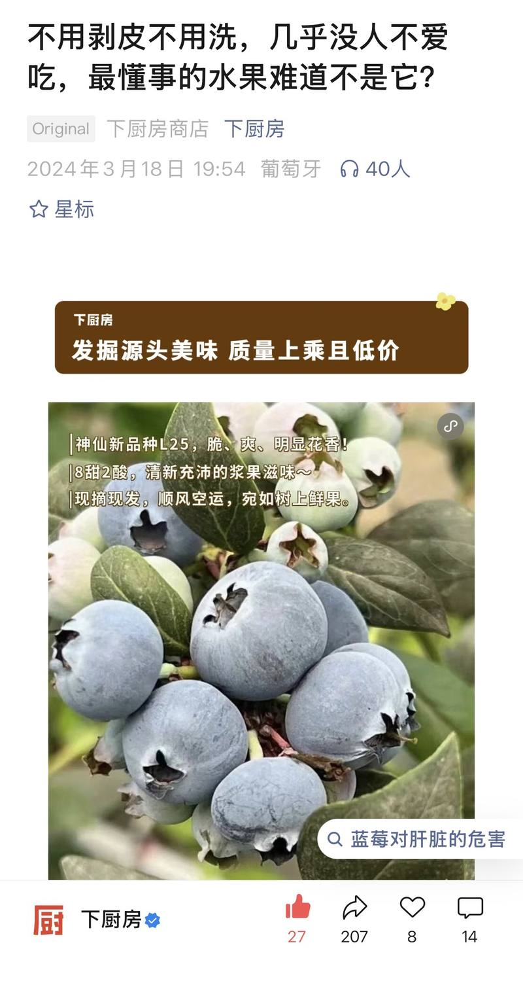
| 段落 | 动作 | 目的 |
|---|---|---|
| 开篇 | "为什么之前不推荐蓝莓" | 建立真实感 |
| 产品 | 花香 · 新品种 L25 | 制造稀缺 |
| 产地 | 云南高原 · 露天生长 | 品质信任 |
| 价格 | "一盒 ≈ 一杯奶茶钱" | 化解敏感 |
| 供应链 | "只和一个供应商合作" | 解决痛点 |
| 转化 | 新人券 · 低门槛话术 | 引导下单 |
每篇卖货文章 = 一次微型说服链路，这套结构在不同品类里反复验证有效。
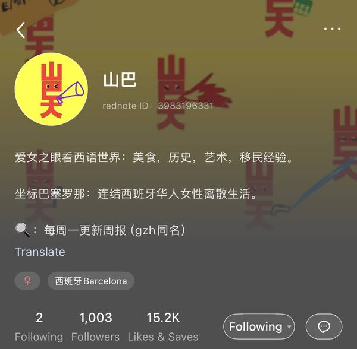
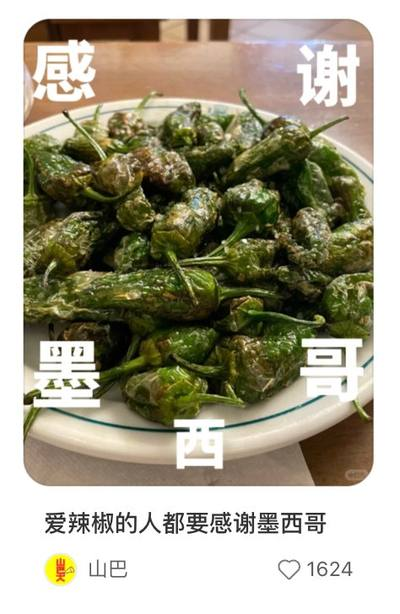
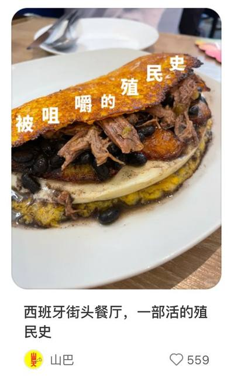
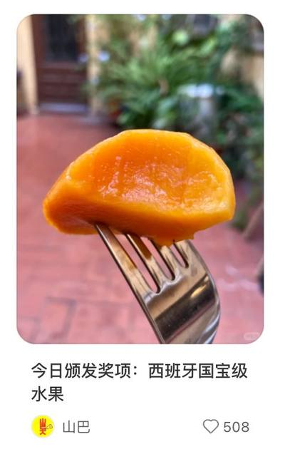
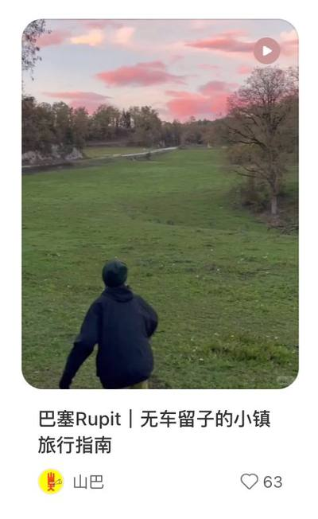
从一盘西班牙辣椒切入，写辣椒经由殖民贸易传入欧洲的历史，把一个饮食细节变成一个文化钩子。
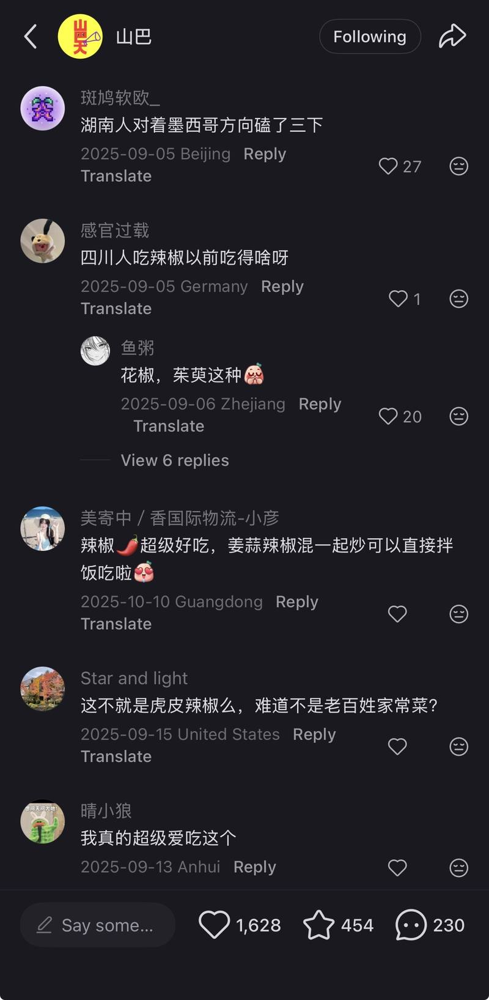
能力迁移：用文化切口打开陌生话题、建立读者共鸣，这套内容逻辑适用于任何需要"冷启动"的品牌或账号。
共鸣本身就是流量。
待在边缘不是坏事。正是因为你不完全属于任何一个地方，才能看见别人习以为常、却值得被说出来的东西。
"如何让这件事情可持续运转？"
从 0 搭建垂直社群的完整经验，从机制设计到活动落地，深度理解海外华人用户在跨文化语境下的真实需求与行为逻辑。
负责内容框架设计、网站文案撰写与活动策划，搭建记录海外华裔女性故事的线上空间。
全程以 AI 辅助工作流：网站命名、栏目架构、视觉风格方向，到双语内容处理、文案润色、访谈提纲撰写。
能力迁移：中英双语内容体系搭建 + AI 辅助内容工作流，可直接应用于面向海外华人群体的品牌内容运营。
AI 不只是提效工具，它在重新划定"一个人能做什么"的边界。